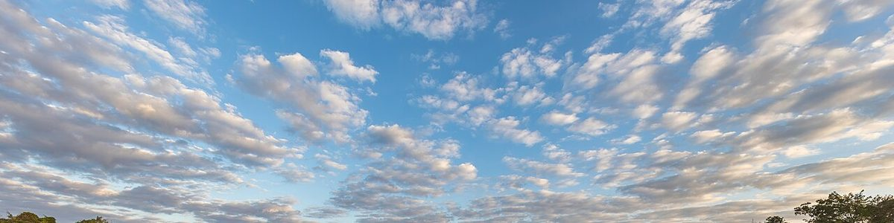
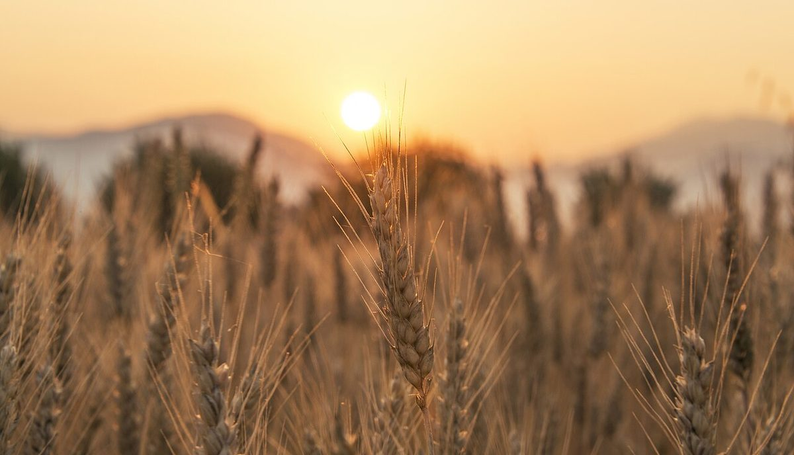

掲載写真はフリー素材のイメージで、実際の店舗・商品ではありません。他地域で撮影されたものや撮影地が不明なものを含みます。
はじめに
今治市大西町宮脇にあるパン屋です。営業時間・メニューなどの詳細は現在準備中です。最新の情報はInstagramまたはお電話でご確認ください。


営業時間・定休日
| 営業時間 | 準備中(お問い合わせください) |
|---|---|
| 定休日 | 準備中(お問い合わせください) |
お問い合わせはお電話かInstagramで
営業時間・メニューなどの詳細は準備中です。お出かけ前や、ご不明な点は、お電話またはInstagramでご確認ください。
このサイトにお問い合わせフォームはありません。